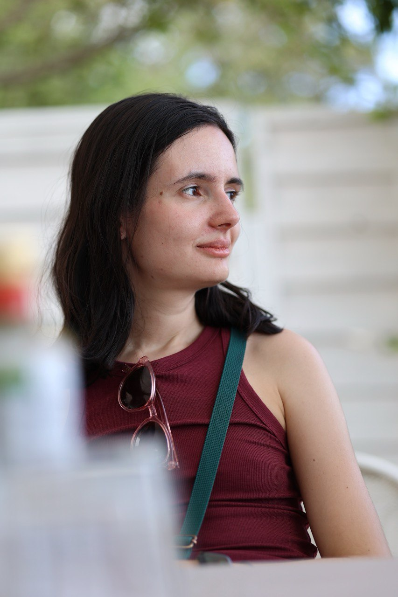

Research Engineer
Anastasiia Fadeeva
I am a Research Engineer in the GenMedia Team at Google DeepMind, focusing on post-training for video and image generation models (such as Omni, Veo and Nano Banana). Previously, I worked on online handwriting foundation models in Google Research, and at Yandex, I worked on YandexGPT, where I focused on improving the stability and efficiency of LLM pre-training.

Work Experience
Google DeepMind
Research Engineer, GenMedia Team- Enhance large generative models using reinforcement learning (RL) post-training and research optimization methods for multimodal generation.
- Research and develop evaluation frameworks and data contributions to advance state-of-the-art image and video generation models.
- Mentor research interns, including directing a project on Direct Preference Optimization (DPO) for image editing that resulted in a successfully accepted patent application.
Google Research / Google DeepMind
Research Engineer, Digital Ink Team- Researched and built models for online handwriting recognition (published paper at ACM SIGKDD 2025) and handwriting synthesis tasks (published paper at ICDAR 2023).
- Contributed to Gemini 2.5 vision pre-training.
- Co-organized the AMLD 2025 Workshop on natural interactions with foundation models, developing hands-on tutorials on digital ink interactions and fine-tuning PaliGemma 2.
Yandex
Machine Learning Developer, Yandex.Search- Worked on pre-training the YandexGPT model (currently ranked 8th place on the Russian SuperGLUE benchmark). Integrated RoPE (Rotary Position Embedding) into pre-training, significantly improving training stability and perplexity.
- Launched the first version of the instruction-tuning phase with subsequent releases across the company.
- Optimized LoRA performance on internal benchmarks, providing comparative analyses with prefix-tuning showing LoRA's superiority for medium-scale datasets.
- Enhanced factual search answers by developing a multi-stage BERT fine-tuning strategy (+6% production recall). Later focused on BERT model compression via distillation for reduced resource consumption.
- Supervised two research interns during my tenure on the team.
Publications
MathWriting: A Dataset For Handwritten Mathematical Expression Recognition
Gemini 2.5: Pushing the Frontier with Advanced Reasoning, Multimodality, Long Context, and Next Generation Agentic Capabilities
Natural Interactions with Foundation Models
InkFM: A Foundational Model for Full-Page Online Handwritten Note Understanding
Representing Online Handwriting for Recognition in Large Vision-Language Models
DSS: Synthesizing long Digital Ink using Data augmentation, Style encoding and Split generation
Academic & Professional Activities
Research
- Presenting a talk "From Strokes to Language: Interpreting Digital Ink, Math, and Structured Notes" at the SwissNLP Expert Group (October 2026).
- Reviewed papers for "Grounded and Faithful Vision-Language Models for Real-World Deployment" (VLM4RWD) Workshop at NeurIPS 2026.
- Reviewed papers for "Social Agents in the Wild" Workshop.
- Program Committee Member for "Spurious Correlation and Shortcut Learning" Workshop at ICLR 2025.
- Delivered invited talk "Image Generation Basics" at École Polytechnique Fédérale de Lausanne (EPFL) in July 2025.
- Reviewed papers for "Demographic Diversity in Computer Vision" Workshop at CVPR 2025.
- Reviewed papers for SwissText 2024 (Scientific Research Regular track) and SwissText 2023 (Applied track).
- Led weekly research reading group about Digital Ink & Large Language Models (LLMs) from 2023 to 2025.